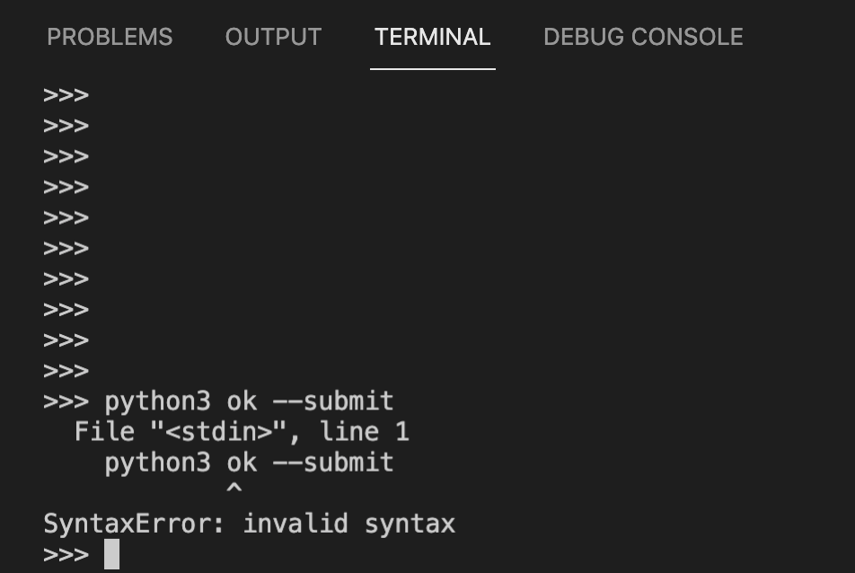
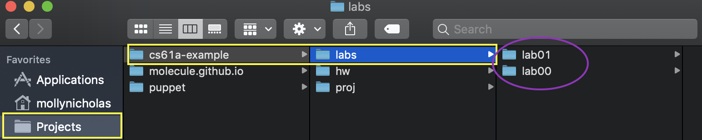

实验0：入门指南（Mac/Linux 设置）
环境设置
终端
终端是一个允许你通过输入命令与计算机交互的程序。
你的计算机上已经有一个名为 Terminal 的程序。打开它，你就可以开始使用了。
Python
Python 3 是本课程使用的主要编程语言。本课程需要 Python 3.8+（我们推荐 Python 3.11）。如果你安装了旧版本的 Python，请确保下载并安装 Python 3.11。你可以使用命令 python3 --version 检查你的 Python 版本。
下载并安装 Python 3.11 (64位)。你可能需要右键点击下载图标并选择"打开"。安装后，请关闭并重新打开你的终端。
验证：我们可以使用终端检查你的 Python 解释器是否安装正确。尝试以下命令：
python3 --version如果安装成功，你应该看到一些显示 "Python 3.XX.XX" 的文本。确保版本显示为 Python 3.8 或更高版本。
文本编辑器
你刚刚安装的 Python 解释器 允许你 运行 Python 代码。你还需要一个 文本编辑器，用来 编写 Python 代码。
Visual Studio Code (VS Code) 将在本课程后面的作业中是必需的。它也是本课程教员中最流行的 Python 编写选择。
我们强烈推荐在本课程中使用 VS Code。 这将帮助我们更好地支持你，因为大多数教员都使用 VS Code。请不要使用如 Microsoft Word 等文字处理器来编辑程序。文字处理器可能会向文档添加额外内容，从而混淆解释器。
重要：不要在本课程中使用 VS Code 中的 "Github Copilot" 扩展。它会通过为你填写答案来阻止你学习需要学习的内容。如果你出于某种原因安装了它，请禁用它。
- 在 VS Code 中打开扩展面板（Ctrl+Shift+X 或 ⌘+Shift+X）。
- 搜索 GitHub Copilot
- 点击旁边的 ⚙️（齿轮）图标。
- 选择禁用（保持安装但不激活）或卸载（完全移除）。
提示： 你可以在 VS Code 中直接打开终端。因此，当运行终端命令时，你可以在 VS Code 中管理所有内容，而不需要在 VS Code 和单独的终端应用程序之间来回切换。你可以通过在 VS Code 的导航栏中转到
Terminal > New Terminal 来打开嵌入式终端。

其他文本编辑器
供你参考，曾经有教员编写过一些关于其他流行文本编辑器的指南（但请不要使用这些……只需使用 VS Code）：
一些学生也使用：
- PyCharm：专为 Python 设计的桌面编辑器。
结对编程
在本课程中，你将有大量机会在实验和项目中进行协作编程。我们建议你现在下载这些结对编程扩展，以便将来使用。
要在 VS Code 中共享代码，你可以按照此处的说明操作：
演练 & 复习
复习：你的计算机文件系统
你的计算机存储文件。每个文件都包含在一个 目录（也称为 文件夹）中。目录也可能包含在其他目录中。你计算机上的所有文件和目录形成一个分层的、树状的结构。下面是一个可能的示例。

例如，在这台计算机上，我们可以看到 / 目录包含另一个名为
readings 的目录，其中包含两个文件：chapter1.pdf 和 chapter2.pdf。
就像现实生活中我们有地址可以定位建筑物一样，计算机使用 路径来定位文件。例如，/readings/chapter1.pdf 是一个路径，它引用你计算机上的特定文件：文件 chapter1.pdf，它包含在文件夹 readings 中，而该文件夹包含在文件夹 / 中。
/readings/chapter1.pdf 是我们所称的 绝对路径 的一个示例，因为它唯一地标识计算机内的特定文件或文件夹。另一种路径是 相对路径，它标识计算机上的位置，该位置是 相对于 某个 工作目录 的。例如，如果工作目录是 /notes/，那么相对路径 unit1/lec1.docx 指的是包含在文件夹 notes 中的文件夹 unit1 中的 lec1.docx 文件，而该文件夹包含在 / 中。你可以将相对路径视为从工作目录开始到达计算机中其他位置的一系列步骤。
在 Mac/Linux 上，以斜杠开头的路径是绝对路径（/syllabus.pdf），而相对路径从不以 / 开头。
相对路径的含义取决于工作目录是什么。例如，如果工作目录是
/notes/unit1/，则路径 lec1.docx 引用与的工作目录是 /notes/unit2/ 时不同的文件。另一方面，如果工作目录是 /readings/，则路径 lec1.docx 是没有意义的，因为在 /readings/ 文件夹中没有名为 lec1.docx 的文件。
演练：使用终端
终端是一个允许你通过输入命令与计算机交互的程序。
打开你的终端。你会看到终端提示符，一个告诉终端已准备好接受输入的字符。如果你使用的是 Mac/Unix 系统，提示符通常是
% 或 $。

如果你的终端窗口看起来不完全相同，请不要担心。重要的部分是提示符显示
$（表示 Bash）或%（表示 zsh）。
工作目录和主目录
你的终端始终在某个文件夹中打开，也称为终端的工作目录。工作目录的名称在终端提示符之前可见。
当你首次打开终端时，你将进入"主目录"。这是终端的默认工作目录。主目录 由 ~ 符号表示，你可能会在提示符中看到它。
~可以在路径中使用。例如，~/cs61a/labs/lab00/lab00.py是引用特定 Python 文件的绝对路径。
你可以通过运行以下命令查看工作目录的绝对路径：
pwd如果你在主目录中，它应该看起来像这样：
/Users/OskiBear
其中 OskiBear 将被你的用户名替换。
命令
有许多不同的命令可以使用。你在本课程中将使用最多的命令是 python3，它告诉计算机运行 Python 解释器。试试看：
python3你应该看到一些关于解释器的文本打印出来，然后是单独一行上的 >>>。这是你可以输入 Python 代码的地方。尝试输入一些你在讲座中看到的表达式，或者只是玩玩看会发生什么！你可以输入 exit() 或 Control-D 返回命令行。
终端 vs Python 解释器
让我们暂停一下，思考终端和 Python 解释器之间的区别。

- 哪个是终端？
- 哪个是 Python 解释器？
- 哪个是我的代码编辑器？
- 你如何区分？
A 和 D 都是我的终端。这是你可以运行 pwd 和 python3 等命令的地方。D 是内置到 VS Code 中的终端。
B 是 Python 解释器。你可以从 >>> 提示符看出，这意味着你已经启动了 Python 解释器。你也可以从可见的启动命令看出：python3。python3 命令启动 Python 解释器。如果你在 Python 解释器中输入普通命令，你可能会得到语法错误！这是一个示例：

C 是我的代码编辑器。这是我可以通过终端执行 Python 代码的地方。
演练：组织文件
在本节中，你将学习如何使用终端命令管理文件。首先从打开终端开始。
确保你的提示符包含某处的
$或%，并且不以>>>开头。如果它以>>>开头，你仍然在 Python 解释器中，需要退出。参见上面了解如何退出。
目录
你将使用的第一个命令是 ls。尝试在你的终端中输入它：
lsls 命令（代表 list）列出当前工作目录中的所有文件和文件夹。回想一下，"目录"是文件夹的另一个名称（如
Documents 文件夹）。
由于你的工作目录现在是主目录，在输入 ls 后，你应该看到主目录的内容。
CLI vs GUI
记住，你可以通过两种不同的方式访问计算机上的文件和目录（文件夹）。你可以使用终端（这是一个 command line interface 或 CLI），或者你可以使用 Finder。Finder 是一个 graphical user interface (GUI) 的示例。导航的技术不同，但文件是相同的。例如， 这是我的实验文件夹在 GUI 中的样子：

这是完全相同的文件夹在终端中的样子：

注意黄色框在两种情况下都显示了路径，紫色椭圆显示了 "labs" 文件夹的内容。
更改目录
要移动到另一个目录，请使用 cd 命令（代表 change directory）。
cd 接受一个路径作为输入，并将终端的工作目录更改为该路径标识的目录。
让我们尝试移动到你的 Desktop 目录。首先，确保你在
主目录中（在命令行上检查 ~），并使用 ls 查看
是否存在 Desktop 目录。
尝试在终端中输入以下命令，它应该会将你移动到该目录：
cd Desktop如果你 不 在主目录中，请尝试 cd ~/Desktop。这告诉终端你要去的路径。
创建新目录
一旦你进入 Desktop 目录，下一个命令称为 mkdir，
它代表 make a new directory。mkdir 接受一个名称作为输入并创建具有该名称的新目录。新目录存储在当前工作目录中。
让我们在你的 Desktop 目录中创建一个名为 cs61a 的目录来存储本课程的所有作业：
mkdir cs61a名为 cs61a 的文件夹将出现在你的桌面上。你可以通过再次使用 ls 命令或使用 Finder 检查桌面来验证这一点。
此时，让我们创建更多目录。首先，确保你在
cs61a 目录中（~/Desktop/cs61a）。然后，创建三个新文件夹，名为 projects、lab 和 hw。它们都应该位于你的 cs61a 文件夹内：
cd ~/Desktop/cs61a
mkdir projects
mkdir lab
mkdir hw现在，如果你列出目录的内容（使用 ls），你将看到三个文件夹，projects、lab 和 hw。
更多目录更改
有几种方法可以返回主目录：
cd ..（两个点）。..表示"父目录"，或当前目录上方的一个目录。cd ~（波浪号）。记住~表示主目录，所以 此命令将始终更改到你的主目录。cd（单独的cd）。只输入cd是输入cd ~的快捷方式。
如果你更喜欢其他方式，你不必将文件保存在桌面上。 你的文件在本地保存的位置不会影响你的成绩。做任何对你来说最简单和最方便的事情！
下载作业
如果你还没有，请下载 zip 压缩包 lab00.zip，其中
包含你完成本实验所需的所有文件。完成后，让我们
找到下载的文件。在大多数计算机上，lab00.zip 可能位于主目录中名为 Downloads 的目录中。使用 ls 命令检查：
ls ~/Downloads如果你没有看到 lab00.zip，请在 EdStem 或答疑时间寻求帮助。在某些版本的 Safari 上，文件可能会自动解压缩，在这种情况下，你只会看到一个名为 lab00 的新目录。
提取起始文件
你必须先展开 zip 压缩包，然后才能处理实验文件。不同的操作系统和不同的浏览器有不同的解压缩方式。在 Mac 上点击 .zip 文件将自动解压。如果你遇到麻烦，可以在网上搜索如何解压缩文件。
这是一种使用终端解压缩的方法：
使用终端，你可以从命令行解压缩 zip 文件。 首先，
cd进入包含 zip 文件的目录：cd ~/Downloads现在，使用 zip 文件的名称运行
unzip命令：unzip lab00.zip
你只需要解压缩文件一次。
解压缩 lab00.zip 后，你将有一个名为 lab00 的新文件夹，其中
包含以下文件（使用 cd lab00 和 ls 检查）：
lab00.py：你将添加代码的模板文件ok：用于测试和提交作业的程序lab00.ok：ok的配置文件
移动文件
通过使用 Finder 应用程序（Mac 的文件浏览器 GUI）将解压缩的 lab00 目录拖放到正确的文件夹中，将其移动到你之前创建的 lab 文件夹中。
或者，你也可以使用 mv 终端命令移动文件：
mv ~/Downloads/lab00 ~/Desktop/cs61a/lab上面的命令将把 ~/Downloads/lab00 文件夹
移动到 ~/Desktop/cs61a/lab 文件夹中。
现在，转到你刚刚移动的 lab00 文件夹。尝试使用 cd 自己导航！如果你卡住了，可以使用以下命令：
cd ~/Desktop/cs61a/lab/lab00总结
以下是供你参考的我们刚刚介绍的命令摘要：
ls：lists（列出）当前目录中的所有文件cd <path to directory>：change（更改）到指定的 directory（目录）mkdir <directory name>：makes（创建）具有给定名称的新 directory（目录）mv <path to source> <path to destination>：moves（移动）源文件/目录 到目标目录
本课程的考试不会测试你文件系统如何工作或绝对路径的定义是什么。 但是，这些技能对于完成本课程中的所有作业至关重要。你可以在将来参考此页面。
最后，你准备好开始编辑实验文件了！如果这看起来很复杂，请不要担心——随着时间的推移，它会变得容易得多。只需继续练习！ 你也可以查看我们的 UNIX 教程，了解更多关于终端命令的详细解释。